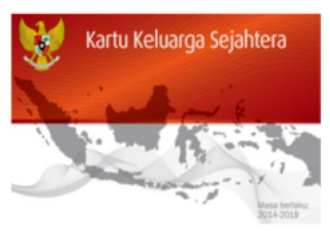
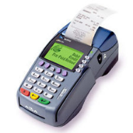
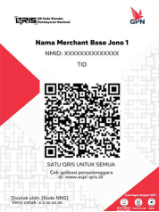

PETUNJUK TEKNIS KUESIONER KPM
BLOK I. SCREENING
102-103
Hanya diisi dengan angka dua digit. Misal, jika menerima bansos 3 kali, tulis 03. Jika tidak menerima sama sekali, tulis 00.

KKS (Kartu Keluarga Sejahtera): Kartu yang merupakan rekening Basic Saving Account (BSA) dengan fungsi menyimpan dana bantuan PKH dan menabung, sekaligus merupakan kartu ATM/debit untuk bertransaksi tarik tunai di ATM atau via EDC di Agen Bank. Selain itu, kartu ini memiliki fitur uang elektronik berbasis server yang berfungsi untuk membeli bantuan pangan (Program Sembako) dan menampung penerimaan bansos/subsidi tunai lainnya.
BLOK II. PROFIL RESPONDEN
201, 206, 207, 208, 209
Kode wilayah dapat dilihat pada tautan berikut:
KODE WILAYAH (bit.ly/juknis-bsnt-2025)
Atau bisa diunduh melalui file Excel pada tautan berikut:
Pencarian kode wilayah dapat dilakukan dengan memasukkan nama wilayah pada kolom pencarian. Kode wilayah berupa kode provinsi, kabupaten/kota,, kecamatan, kelurahan/desa, dan KPwDN tersedia pada tabel. Simak video (pada web) atau gambar berikut untuk tutorial lebih lengkap:
210
Klasifikasi Desa/Kelurahan sebagai perkotaan atau perdesaan ditentukan oleh persepsi enumerator terhadap desa/kelurahan tersebut. Kriteria klasifikasi adalah sebagai berikut:
| Kriteria | Desa Perkotaan | Desa Perdesaan |
|---|---|---|
| Ciri-ciri | Memiliki ciri-ciri kota: kepadatan penduduk tinggi, infrastruktur maju, dan mayoritas penduduk bekerja di sektor non-pertanian. Contoh: Kelurahan di pusat kota, kawasan industri, atau perumahan padat di pinggir kota. |
Memiliki ciri-ciri tradisional: mayoritas penduduk bekerja di sektor pertanian/perikanan, kepadatan penduduk rendah. Contoh: Desa pertanian, desa nelayan, atau desa di pegunungan. |
| Kepadatan Penduduk | Tinggi (banyak rumah berdekatan, lahan sempit). Contoh: Kompleks perumahan, apartemen, atau gang sempit di kota. |
Rendah (rumah berjauhan, lahan luas). Contoh: Rumah-rumah tersebar di area persawahan atau ladang. |
| Sektor Pekerjaan | Mayoritas bekerja di sektor non-pertanian (perdagangan, industri, jasa). Contoh: Pegawai toko, buruh pabrik, pegawai kantor, sopir angkutan umum. |
Mayoritas bekerja di sektor pertanian atau perikanan. Contoh: Petani, buruh tani, nelayan, peternak. |
| Infrastruktur | Lebih maju dan lengkap (jalan aspal, transportasi publik, pusat perbelanjaan, rumah sakit, sekolah menengah/tinggi). Contoh: Jalan raya besar, halte bus, mall, jarak ke rumah sakit umum dekat. |
Terbatas dan sederhana (jalan tanah/batu, transportasi terbatas, fasilitas umum sederhana). Contoh: Jalan desa, puskesmas, pasar tradisional kecil, jarak ke rumah sakit umum jauh. |
214 dan 215
- KTP Elektronik (e-KTP): Kartu identitas fisik berbentuk kartu plastik dengan chip elektronik yang berisi data kependudukan. Digunakan secara langsung sebagai bukti identitas.
- KTP Digital: Identitas kependudukan dalam bentuk digital yang diakses melalui aplikasi di perangkat elektronik (misal: smartphone). Tidak berbentuk fisik, tetapi memiliki kekuatan hukum yang sama dengan e-KTP.
217
Definisi Jenis Pekerjaan:
Pekerja Formal:
Pekerja yang bekerja pada institusi atau perusahaan dengan hubungan kerja yang jelas, mendapatkan upah tetap, dan umumnya memiliki perlindungan atau jaminan sosial (misal: pegawai negeri, karyawan swasta, buruh pabrik).Pekerja Informal/Serabutan:
Pekerja yang tidak memiliki hubungan kerja tetap, upah tidak menentu, dan biasanya tidak mendapat perlindungan atau jaminan sosial (misal: buruh harian lepas, tukang ojek, pedagang keliling, pekerja serabutan).Wiraswasta/Wirausaha/Bekerja Sendiri:
Seseorang yang menjalankan usaha atau pekerjaan atas inisiatif sendiri, menanggung risiko usaha, dan tidak bergantung pada pemberi kerja (misal: pemilik warung, petani yang mengelola lahan sendiri, pengrajin mandiri).
BLOK III. KONDISI EKONOMI
309
Diisi dengan jumlah orang diluar responden. Misal, jika responden adalah seorang suami dengan istri dan 2 anak yang tinggal serumah dan masih diberi tanggungan, maka diisi 03 (istri dan 2 anak). Jika tidak ada tanggungan, maka diisi 00.
310-313
Isian 309 harus konsisten dengan isian 310-313. Jika memiliki 3 tanggungan (misal istri dan 2 anak kandung), maka bisa diisi dengan contoh berikut:
| Tanggungan ke- | 310 | 311 | 312 | 313 |
|---|---|---|---|---|
| 1 | [2] | [5][0] | [1] | [1] |
| 2 | [3] | [1][7] | [2] | [1] |
| 3 | [3] | [1][5] | [2] | [1] |
Baris pertama diisi dengan isian untuk istri, baris kedua diisi untuk anak pertama, dan baris ketiga diisi untuk anak kedua. Jika tidak ada tanggungan, maka isian 310-313 dibiarkan kosong. Apabila jumlah tanggungan responden KPM berjumlah lebih dari 5 orang, maka enumerator dapat menambahkan baris baru pada kuesioner.
BLOK IV. PEMAHAMAN TERHADAP MEKANISME PENYALURAN BANSOS NON TUNAI
412-414
Istilah pengkinian data merujuk kepada aktivitas pembaruan (update) data identitas responden, terutama apabila responden telah melakukan kegiatan yang mengubah data pribadinya, seperti pindah alamat rumah, kematian/kelahiran anggota keluarga, penggantian nomor HP pribadi, dsb.
BLOK V. PENGALAMAN KPM DALAM PENARIKAN BANSOS NON TUNAI
501-503
Pada 501, jika responden tidak pernah mengambil bansos di lokasi tersebut, maka isi dengan angka 0, dan kemudian 502 dan 503 dibiarkan kosong.
Nominal pada 503 dalam ribuan rupiah. Misal, jika biaya transportasi yang dikeluarkan adalah Rp 15.000, maka isian 503 diisi dengan angka 015.
510
| Istilah | Definisi |
|---|---|
| Kartu KKS hilang/rusak | Kartu KKS hilang atau mengalami kerusakan secara fisik (misal: kartu patah) sehingga tidak bisa digunakan untuk melakukan transaksi. |
| Kartu KKS terblokir | Responden KPM melakukan aktivitas transaksi (seperti salah memasukkan PIN sebanyak 3 kali) yang menyebabkan KKS terblokir. |
| Lupa PIN | Responden KPM tidak ingat sama sekali PIN Kartu KKS ketika ingin melakukan transaksi. |
| Salah memasukkan PIN | Responden salah memasukkan PIN Kartu KKS-nya, namun tidak sampai menyebabkan KKS terblokir. |
513
Apabila responden KPM pernah mengalami beberapa masalah dengan sebagian masalah berhasil diselesaikan dan sebagian lainnya masih dalam proses, maka pilihan 1 (Ya, selesai) dapat dipilih
BLOK VI. PENGALAMAN KPM DALAM MELAKUKAN TRANSAKSI DIGITAL
606-608
| Istilah | Definisi |
|---|---|
| Tarik tunai di teller | Kegiatan mengambil uang dari rekening bank melalui teller bank. |
| Setor tunai di teller | Kegiatan menyimpan uang ke dalam rekening bank melalui teller bank. |
| ATM (Automatic Teller Machine) | Mesin yang digunakan untuk melakukan penarikan tunai dari rekening dan/atau mengakses layanan lain, seperti cek saldo, transfer dana, atau setor tunai. |
| Mesin EDC (Electronic Data Capture) | Mesin/alat yang digunakan dalam transaksi pembayaran non tunai yang disediakan oleh Bank.  |
| Uang Elektronik berbasis kartu/chip | Sistem pembayaran non tunai yang memiliki bentuk fisik berupa kartu dengan sebuah chip di dalamnya. Nilai nominal saldo uang yang tersedia tersimpan di dalam chip, sehingga apabila pengguna mengalami kehilangan kartu, maka saldo uang yang dimilikinya akan hilang juga. Contoh: e-Money, Flazz, BRIZZI, TapCash |
| Uang Elektronik berbasis server | Sistem pembayaran non tunai yang tidak berbentuk fisik melainkan berbentuk aplikasi. Saldo dalam uang elektronik ini dapat dilihat melalui aplikasi ponsel, dengan pencatatan kepemilikan yang tersimpan di server. Contoh: LinkAja, OVO, Go-Pay, Dana |
| Internet Banking | Fasilitas transaksi non tunai melalui laman website bank. |
| Mobile Banking | Fasilitas transaksi non tunai melalui aplikasi perbankan pada handphone. Contoh: BCA Mobile Banking, Livin’ by Mandiri, BRImo, Jago, Jenius, dll. |
| SMS (Short Message Service) Banking | Fasilitas transaksi non tunai melalui short message service menggunakan handphone. |
| QRIS (Quick Response Indonesia Standard) | Serangkaian kode yang memuat data/informasi a.l. identitas pedagang/pengguna, nominal pembayaran, dan/atau mata uang yang dapat dibaca dengan alat tertentu dalam transaksi pembayaran.  |
Pilihan jawaban pada 606 ditanyakan semua kepada responden. Jika responden mengetahui fasilitas transaksi elektronik atau digital yang disebutkan, maka pilih angka yang sesuai.
Pertanyaan 607 menanyakan hal terkait fasilitas transaksi elektronik atau digital yang pernah digunakan oleh responden secara pribadi di luar penerimaan Bansos pada satu tahun terakhir.
Pertanyaan 608 ditanyakan sesuai dengan jawaban responden pada 607 dengan mengurutkan 3 jenis fasilitas transaksi keuangan yang paling sering digunakan.
Contoh: Pada pertanyaan 607 responden memilih jawaban 3 (ATM) dan jawaban 9 (SMS Banking). Maka untuk pertanyaan 608 responden hanya diminta untuk mengurutkan fasilitas “ATM” dan “SMS Banking” saja dimulai dari yang paling sering. Pilihan jawaban yang tidak dipilih pada 607 tidak perlu diurutkan di 608.
609-611
Pertanyaan 610 dan 611 hanya diisi jika responden menjawab “Ya” pada 609.
BLOK VII. KEPEMILIKAN HANDPHONE DAN KUALITAS SINYAL
715
Pilihan nomor 3, yaitu “Mencari informasi”, dapat dipilih apabila responden melakukan kegiatan aktivitas pencarian informasi atau pengetahuan yang dapat bersumber dari kegiatan browsing (menggunakan search engine google), grup media sosial (grup WhatsApp), video edukatif (Youtube, Facebook, TikTok), dsb.
722 dan 723
Pertanyaan 723 hanya diisi jika responden menjawab “Ya” pada 722. Berikan urutan 3 opsi metode penarikan bansos yang paling diinginkan oleh responden.
BLOK VIII. PERSEPSI TERHADAP BANSOS NON TUNAI
801
-Enumerator dapat menyederhanakan kalimat pernyataan-pernyataan yang ada dengan bahasa sendiri agar responden dapat lebih mudah memahami maksud pernyataan yang ditanyakan. -Pada poin 1 makna istilah ‘cepat’ adalah dana bansos non tunai yang sudah masuk ke rekening KPM dapat dengan segera ditarik/dimanfaatkan oleh KPM. -Istilah ‘dimanapun’ untuk poin 2 dan 5 dimaksudkan untuk tempat penarikan bansos non tunai, yaitu Agen Bank/ATM/KC Bank.